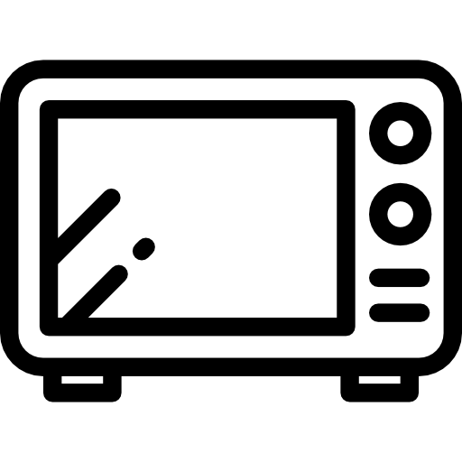
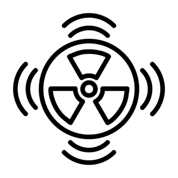

Ondas de Rádio
Têm os maiores comprimentos de onda e as menores frequências. Usadas principalmente para comunicação, como rádio, televisão e redes de celular.


As ondas eletromagnéticas são radiações que se propagam pelo vácuo e em meios materiais sem precisar de um meio físico. Elas incluem diferentes tipos, como ondas de rádio, micro-ondas, infravermelho, luz visível, ultravioleta, raios-X e raios gama, cada uma com suas características e aplicações. Essas ondas são fundamentais em várias tecnologias, como comunicação, medicina e iluminação.
Têm os maiores comprimentos de onda e as menores frequências. Usadas principalmente para comunicação, como rádio, televisão e redes de celular.

Ondas de comprimento intermediário, usadas em fornos para aquecer alimentos e em telecomunicações, como Wi-Fi e radares.

Emitido por objetos quentes, é usado em controles remotos, sensores térmicos e tecnologia de aquecimento.

A luz visível é a única parte do espectro eletromagnético que podemos enxergar, abrangendo cores do vermelho ao violeta.

Invisível para nós, é emitida pelo Sol e pode causar queimaduras solares, mas também é utilizada em esterilização e tratamentos médicos.
Ondas de alta energia que podem penetrar materiais, sendo amplamente usadas em exames médicos, como radiografias.

As ondas de maior energia e menor comprimento de onda, resultantes de reações nucleares. São usadas no tratamento de câncer e no estudo do universo..